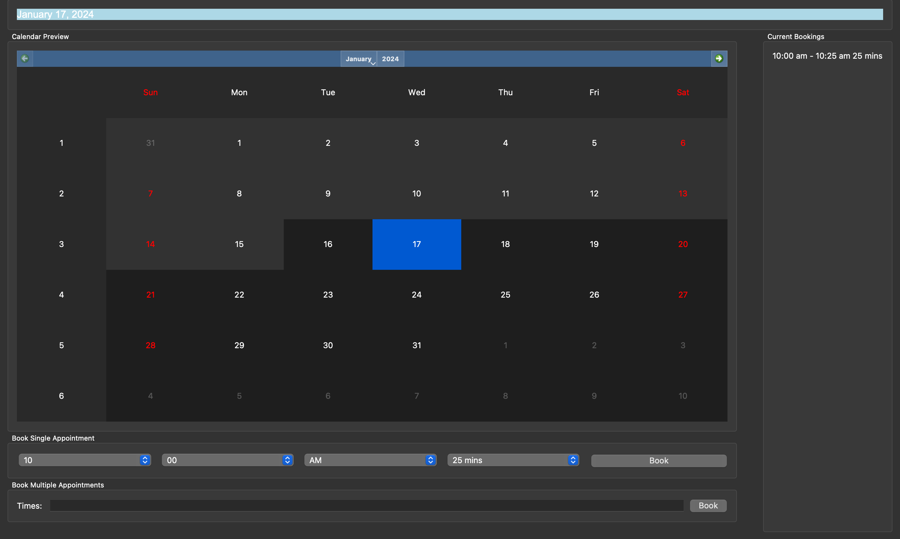

Projects
This is a list of projects I have worked on and enjoyed during my academic career.
Python GUI Appointment Booker
- This project is a GUI application created for scheduling appointments.
- It uses the Python package PyQt5 to organize windows, control functionality, and more.
- This project implements GUI design, as well as web scraping.
- Holidays cannot be booked, the dates are pulled from Florida Tech's academic calendar
- Github Link
- This image below shows the appearance of the GUI with an appointment booked

Forward Kinematics Robot Arm
- This project is a simple animation of a 3D-rendered robot arm using Forward Kinematics.
- The code implements the numpy package and matrix math to calculate each new angular plane.
- Each plane where the angle on the arm changes is calculated using transformation matrices.
- The 3D model itself is rendered using the Python Vedo Package.
- The video contains several screenshots with different parameters to show the arm's movement.
Available Pages